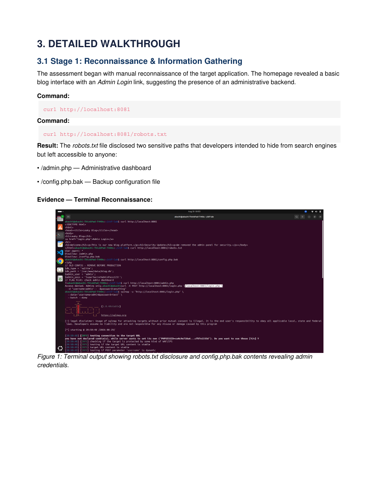
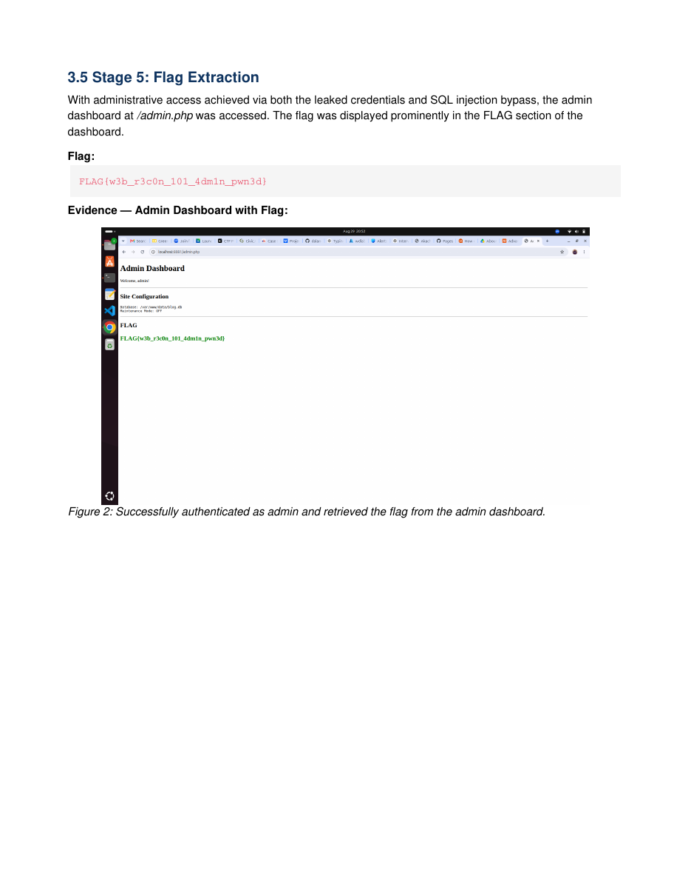
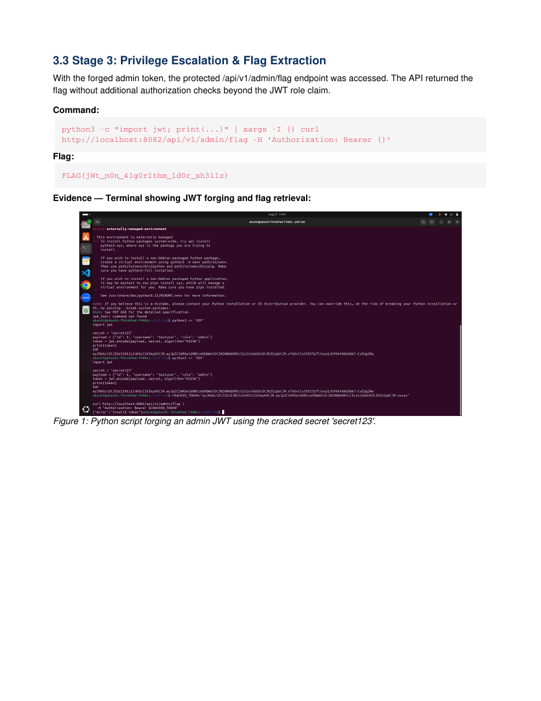
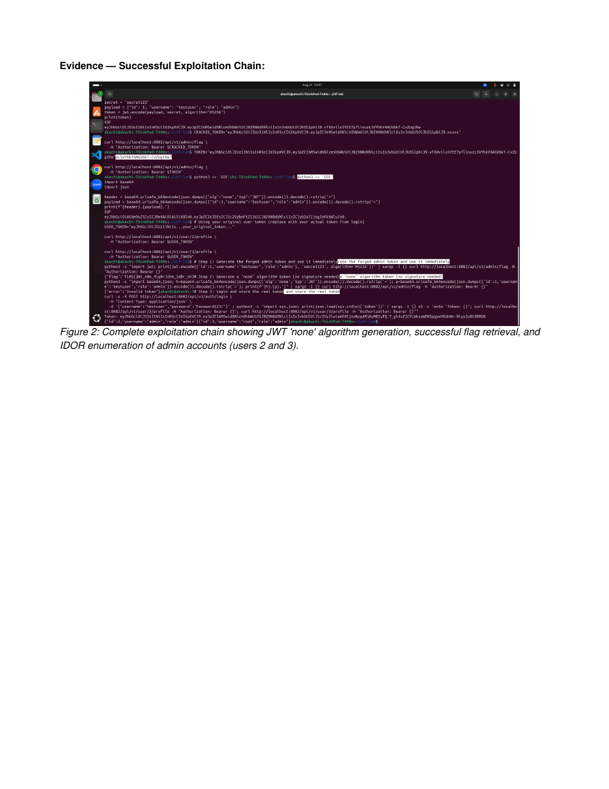
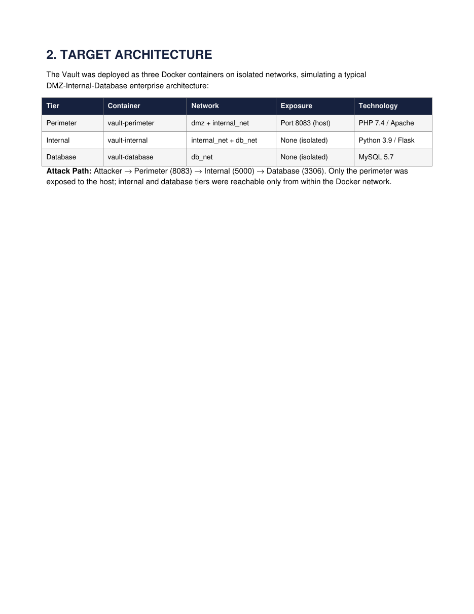
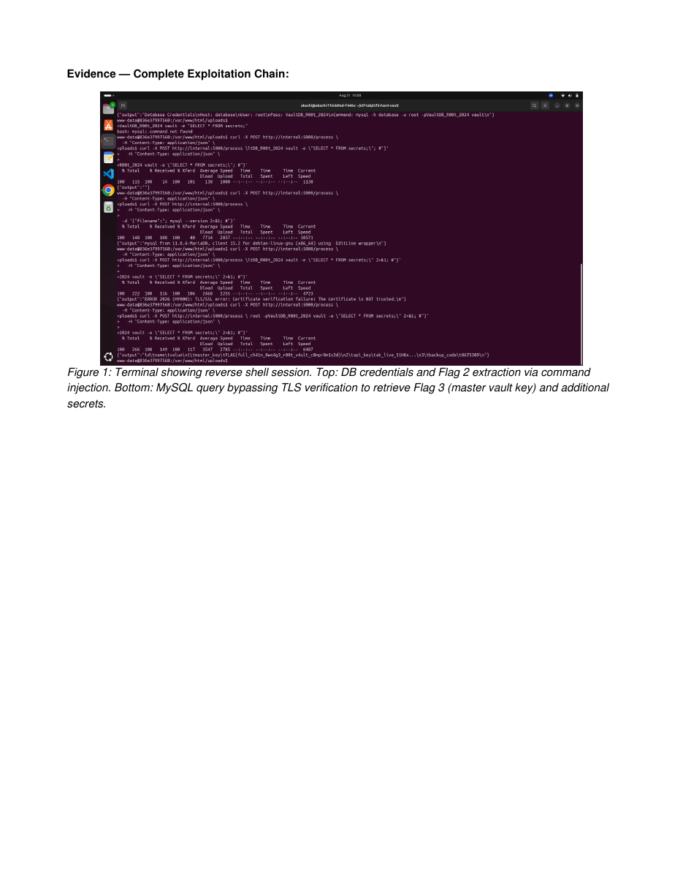

Web Application Security
Endpoint discovery, information disclosure, SQL injection, authentication bypass and secure-coding remediation.
OWASP Testing GuideSQLiAuth Bypass
I built and exploited a 3-tier CTF lab ranging from easy to hard, demonstrating progressive skill in web application security, API authentication bypass, and enterprise network pivoting. Each engagement followed the OWASP Testing Guide and PTES frameworks, with full remediation documentation.
The portfolio emphasizes scoping, reconnaissance, attack-path validation, technical evidence, risk ratings, business impact and remediation—not just flag capture.
Endpoint discovery, information disclosure, SQL injection, authentication bypass and secure-coding remediation.
JWT analysis, token forgery, authorization testing, IDOR and server-side command injection.
Perimeter compromise, reverse shell, internal discovery, lateral movement and database access across segmented tiers.
PHP / Apache / SQLite web application assessment.

Reconnaissance exposed hidden administrative and backup-file paths. The backup configuration disclosed sensitive credentials, while the login flow was independently vulnerable to SQL injection authentication bypass. sqlmap validation confirmed plaintext password exposure in the SQLite database.

Remove backup files from the web root, use parameterized queries, hash passwords with bcrypt/Argon2id, disable directory indexing and add WAF/IPS coverage.
Node.js / Express / JWT authentication and authorization assessment.

The API accepted unsafe JWT behavior and relied on a weak signing secret. Forged administrative tokens unlocked protected functionality, while authorization testing exposed IDOR and post-exploitation testing confirmed command injection in an administrative backup endpoint.

Whitelist JWT algorithms, replace weak secrets with cryptographically strong material, enforce server-side object authorization and remove user input from shell-command construction.
Three-tier enterprise-style attack path: perimeter → internal service → database.

The public-facing perimeter accepted executable PHP uploads, yielding remote code execution and an interactive foothold. From there, internal discovery identified an isolated Flask service, where command injection exposed database credentials. The database tier was then reached through the internal network and queried for sensitive data.

Harden upload controls, eliminate shell command construction, enforce least-privilege network segmentation, move database credentials into a secrets manager and correctly configure encrypted database transport.
Each lab increases in scope and complexity while keeping documentation and remediation at the center of the engagement.
curl, browser analysis, robots.txt review, endpoint mapping, nmap and internal service discovery.
SQL injection, authentication bypass, file-upload RCE, command injection and vulnerable-code reasoning.
JWT decoding, signature bypass, weak-secret testing, role manipulation, IDOR and authorization validation.
Reverse shells, network reconnaissance, pivoting, lateral movement and database access in a controlled lab.
curl, sqlmap, Python/PyJWT, nmap, netcat, Bash, browser tooling and MySQL client workflows.
OWASP/PTES methodology, CVSS/CWE mapping, attack-chain evidence, impact statements and actionable remediation.